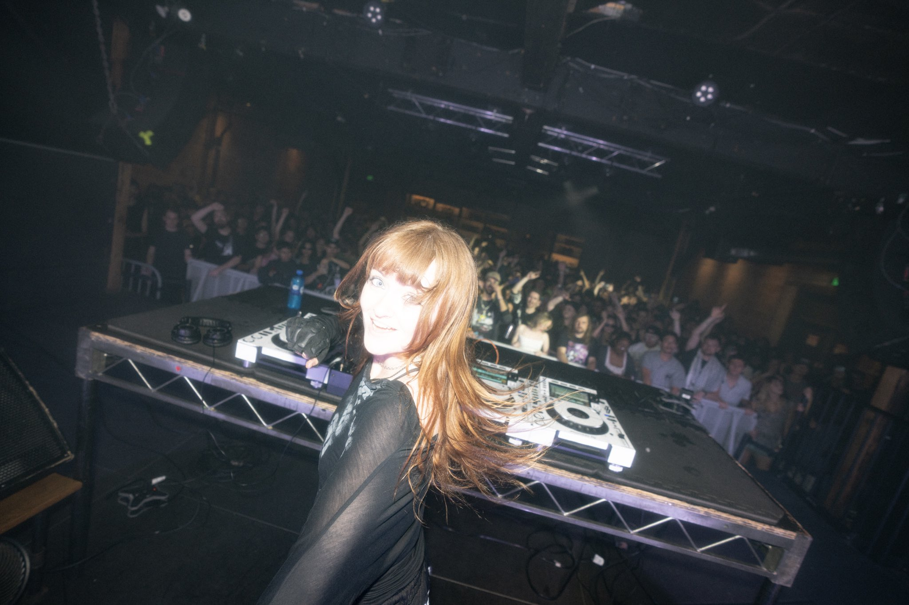
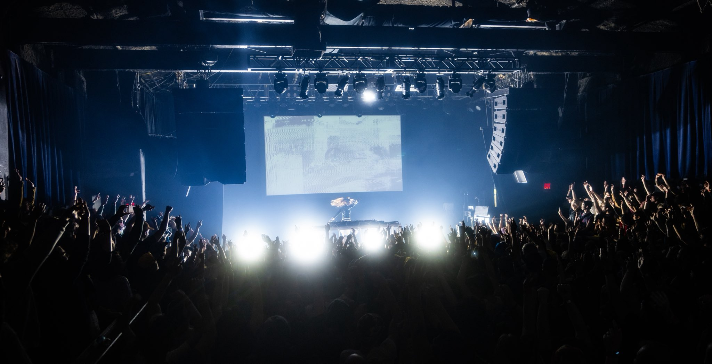
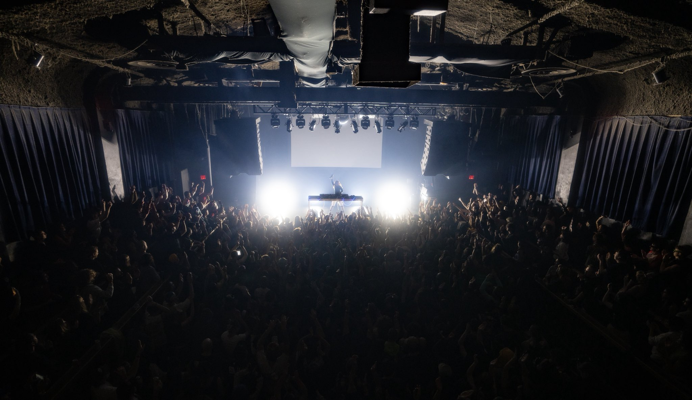
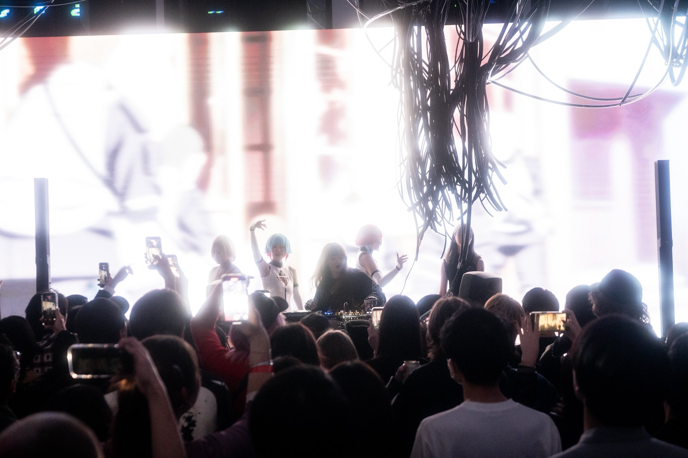
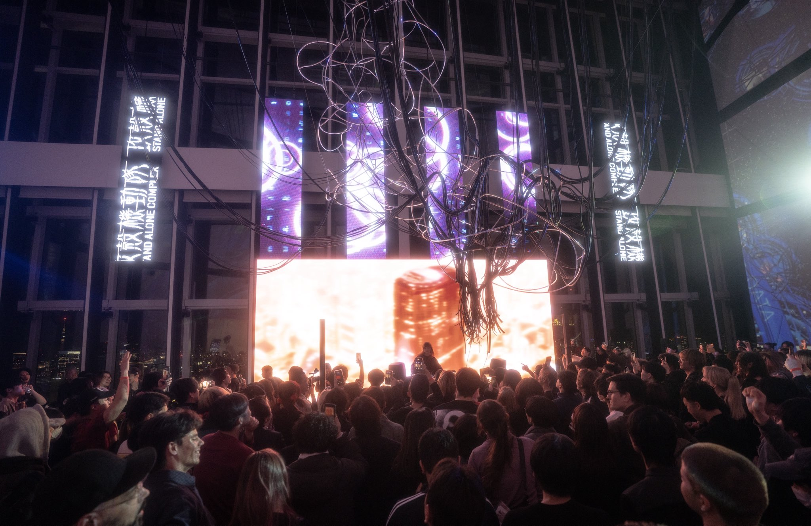
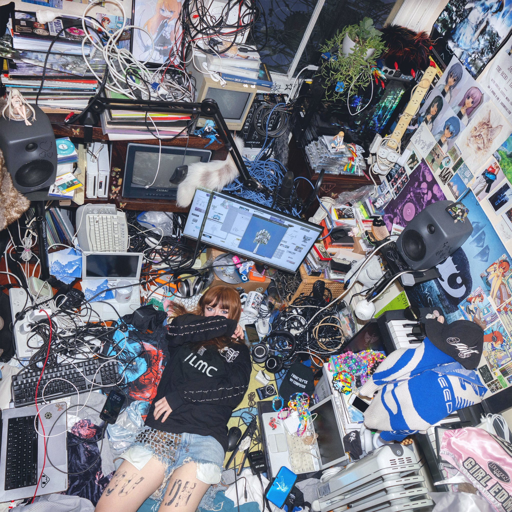

Quem é Ninajirachi?
Onde o Pop encontrou o Hiper-Futuro
Diretamente da Austrália para as caixas de som do mundo, Ninajirachi é a produtora musical e arquiteta da nova era na música eletrônica.
Com produções que mistura texturas cristalinas, sintetizadores etéreos e batida eletrônica, Nina mergulhou na produção do hyperpop e edm.
Atualmente, ela tem ganhado dezenas de prêmios musicais de categorias como: revelação solo do ano e artista independente do ano.
Shows
|
  |
|
   |
Seu amor ao computador, literalmente
No seu último ábum lançado, "I Love My Computer", ela aborda temas exatamente disso: o amor de Nina com seu computador e toda essa brincadeira com o tema.
Escute abaixo as faixas desse álbum.
I Love My Computer
- iPod Touch
- Fuck My Computer
- CSIRAC
- Delete
- ฅ^•ﻌ•^ฅ
- All I Am
- Infohazard
- Battery Death
- It's You
- All At Once
